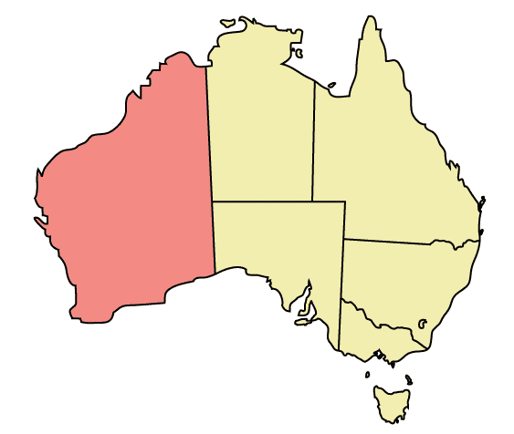

Western Australia
Western Australia is a state occupying the entire western third of Australia. It is bounded by the Indian Ocean to the north and west, the Great Australian Bight and Southern Ocean to the south,[b] the Northern Territory to the north-east and South Australia to the south-east. Western Australia is Australia's largest state with a total land area of 2,529,875 square kilometres , and the second-largest country subdivision in the world, surpassed only by Russia's Sakha Republic – however, a significant part of it is sparsely populated. The state has about 2.6 million inhabitants, around 11% of the national total. Ninety-two per cent of the population lives in the south-west corner of the state.
